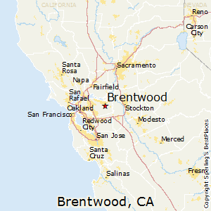

Brentwood es una ciudad en el condado de Contra Costa, California, Estados Unidos. Está ubicado en la región de East Bay del Área de la Bahía de San Francisco. La población es de 51.481 en 2010, un aumento del 121 por ciento desde 23.302 en el censo de 2000. [8] Brentwood comenzó como una comunidad a fines del siglo XIX, y todavía es conocida en toda el Área de la Bahía por sus productos agrícolas, principalmente cerezas, maíz y melocotones. Debido a la expansión urbana, muchas de las antiguas granjas y huertos han sido reemplazadas por desarrollos suburbanos desde 1990. Brentwood es cada vez más residencial, con una tasa de crecimiento demográfico de tres dígitos durante la década de 1990 y 69% desde 2000 hasta 2005.
